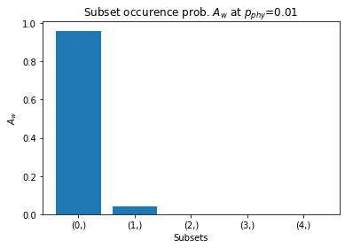
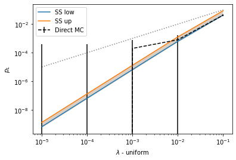
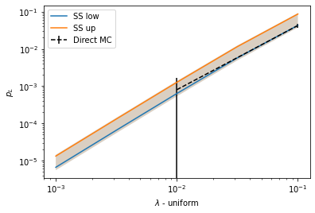
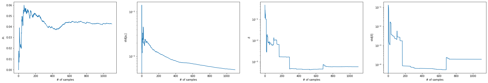
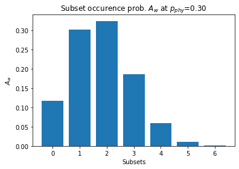

from qsample import Circuitqsample
Efficient sampling of noisy quantum circuits and protocols
Install
pip install qsamplePrerequisites
- This package requires Python 3.9 or higher.
- pdflatex (for circuit rendering)
When to use
This package is for you if you want to
* model circuit-level incoherent Pauli noise (we don’t do coherent noise here, neither are our auxiliary qubits modelled as ideal)
* with high fidelity physical operations aka low physical error rates
* for a QEC protocol that consists of execution of one or more quantum circuits with in-sequence measurements and feed-forward of measurement information
* over a specific range of varying physical error rates
Getting started
Library overview
- Circuit
- Protocol
- Error Model
- Simulator
- Sampler
5.1. Direct Sampler
5.2. Interlude: Callbacks
5.3. Subset Sampler
1. Circuit
- List of ticks
- Each tick is a dictionary, key: gate type, value: set of qubit(s)
- Recommended: 1 gate type per tick
Example: Flagged-GHZ preparation: * Produce GHZ state on qubits 0-3
* Flag-qubit 4, measure:
* 0: error-free*
* 1: flip on one data qubit*
* Only for max. 1 allowed fault.
ghz = Circuit([ {"init": {0,1,2,3,4}},
{"H": {0}},
{"CNOT": {(0,1)}},
{"CNOT": {(1,2)}},
{"CNOT": {(2,3)}},
{"CNOT": {(3,4)}},
{"CNOT": {(0,4)}},
{"measure": {4}}], ff_det=True)ff_det: fault-free deterministic. Set to True if circuit gives unique measurement result when executed without faults.
ghz.draw()2. Protocol
- Graph (can be cyclic)
- Vertices: Circuits
- Edges: transition rules = boolean* functions (checks)
- Must include start and end nodes.
* Exception: Correction functions can return circuits for on-the-fly execution. (special case, will not show here)
Example: Flagged-GHZ repeat(3)-until-success
* Execute flagged-GHZ circuit max. 3 times.
* Only repeat if measured 1.
* If measured flag to be 0 within 3 iteration -> No fail
* If after 2 iterations 3rd measurement is also 1 -> Fail
from qsample import Protocolghz3 = Protocol(fault_tolerant=True)
ghz3.add_node('ghz', circuit=ghz) # Add node with corresponding circuit
ghz3.add_edge('START', 'ghz', check='True') # Transition START -> first circuit node always True
ghz3.add_edge('ghz', 'ghz', check='repeat(ghz)') # Transition to ghz if repeat(ghz) True.
ghz3.add_edge('ghz', 'FAIL', check='logErr(ghz)') # Transition to final node FAIL if logErr(ghz) True.fault_tolerant: Define all weight-1 paths (circuit sequence with max. 1 fault) to never result in a logical fail.
ghz3.draw()
repeat()andlogErr()are user-defined (boolean) check functions
- Measurement history of circuits stored during for protocol run
- Can access measurement history of any circuit by passing its name as argument
Next, we define what the two check functions should do:
def repeat(msmt_list): # arg: list of ghz's measurment history
return len(msmt_list) < 3 and msmt_list[-1] == 1 # If True repeat ghz
def logErr(msmt_list):
return len(msmt_list) == 3 and msmt_list[-1] == 1 # If True transition to `FAIL`
functions = {'logErr': logErr, 'repeat': repeat}
ghz3._check_fns.update(functions) # Let protocol know about user-defined checksNote: It is also possible that all checks are false. In this case the protocol exits “insignficantly”.
Here: “insignificant” when Flag=0 within 3 protocol runs -> Go to next protocol run, i.e. sample.
3. Error model
- Strategy:
- Generate fault circuit \(C_f\) of same length as reference circuit \(C\)
- During simulation iterate \(C\) and \(C_f\) simulateously and apply to state
- Generate fault circuit \(C_f\) of same length as reference circuit \(C\)
- Must include:
group(): group circuit locations by key, e.g. all 1-qubit-gates
select(): picks certain amount of locations from each group (not required by user)
generate(): generator function, returns a Pauli fault operator for given location
from qsample.noise import E1
E1.groups, E1().group(ghz) # All gates in group `q`(['q'],
{'q': [(1, 0),
(2, (0, 1)),
(3, (1, 2)),
(4, (2, 3)),
(5, (3, 4)),
(6, (0, 4))]})4. Simulator
- Two types available: Stabilizer (CHP) and Statevectors (ProjectQ port), both well-tested
- https://github.com/Strilanc/python-chp-stabilizer-simulator
- https://github.com/ProjectQ-Framework/ProjectQ
- Statevector simulator has more available gates and functions
from qsample import StabilizerSimulator as CHP5. Sampler
- Two types: Direct (Monte Carlo) and Subset sampler
- All relevant information stored in
CountTreedata structure
5.1. Direct sampler
from qsample import DirectSampler
import numpy as np
import matplotlib.pyplot as pltLet’s define some physical error rates at which to sample:
sample_range = np.logspace(-3,0,5)
err_probs = {'q': sample_range} # Note: Must provide rate(s) for each group specified in `ErrorModel`
err_probs{'q': array([0.001 , 0.00562341, 0.03162278, 0.17782794, 1. ])}dsam = DirectSampler(protocol=ghz3, simulator=CHP, err_probs=err_probs, err_model=E1)
dsam.run(10000)p_L, std = dsam.stats()
plt.errorbar(sample_range, p_L, fmt='--', c="black", yerr=std, label="Direct MC")
plt.plot(sample_range, sample_range,'k:', alpha=0.5)
plt.xscale('log')
plt.yscale('log')
plt.xlabel('$p_{phy}$(q)')
plt.ylabel('$p_L$');
Check what has been sampled for the last (1e0) physical error rate:
dsam.trees[(1.0,)].draw()
5.2. Interlude: Callbacks
- Used to receive intermediate results inside sampling process
- E.g. we might want to avoid unnecessary samples (at large \(p_{phy}\))
- We can use the callback
RelStdTarget
- We can use the callback
from qsample import callbacks as cb
dsam2 = DirectSampler(protocol=ghz3, simulator=CHP, err_probs=err_probs, err_model=E1)
dsam2.run(10000, callbacks=[cb.RelStdTarget(target=0.2)])Rel. std target of 0.2 reached. Sampling stopped.Rel. std target of 0.2 reached. Sampling stopped.Another callback is VerboseCircuitExec, which gives a detailed log of which circuits, faults and measurements took place:
dsam3 = DirectSampler(protocol=ghz3, simulator=CHP, err_probs={'q': 0.1}, err_model=E1)
dsam3.run(10, callbacks=[cb.VerboseCircuitExec()])ghz -> Faults: [] -> Msmt: 0
None
ghz -> Faults: [(3, {'X': {1, 2}})] -> Msmt: 1
ghz -> Faults: [(2, {'Z': {0}, 'Y': {1}})] -> Msmt: 1
ghz -> Faults: [] -> Msmt: 0
None
ghz -> Faults: [] -> Msmt: 0
None
ghz -> Faults: [(2, {'Z': {1}}), (6, {'Y': {0}})] -> Msmt: 0
None
ghz -> Faults: [] -> Msmt: 0
None
ghz -> Faults: [(3, {'Z': {1}, 'Y': {2}}), (5, {'Z': {4}})] -> Msmt: 1
ghz -> Faults: [(2, {'Z': {0}, 'X': {1}})] -> Msmt: 1
ghz -> Faults: [(5, {'Y': {3, 4}})] -> Msmt: 1
FAIL
ghz -> Faults: [(4, {'X': {3}}), (6, {'X': {0}})] -> Msmt: 1
ghz -> Faults: [] -> Msmt: 0
None
ghz -> Faults: [] -> Msmt: 0
None
ghz -> Faults: [] -> Msmt: 0
None
ghz -> Faults: [(3, {'X': {1}, 'Z': {2}}), (4, {'X': {2, 3}})] -> Msmt: 1
ghz -> Faults: [(3, {'Y': {1, 2}})] -> Msmt: 1
ghz -> Faults: [(6, {'X': {4}})] -> Msmt: 1
FAILWe can also write our own callback. Every sampler has 6 callback hooks:
* Begin/End sampler
* Begin/End protocol
* Begin/End circuit
5.3. Subset Sampler
- Samples only at one physical error rate
pmax - Scaling obtained analytically
pmaxmust be chosen in “representative” region
Note: 1. For multi-parameter error model pmax is a tuple of one physical error rate per group.
2. The choice of pmax has a direct impact of which subsets are sampled.
How to choose pmax? What is the heuristic?
* We want to sample, s.t. the subset occurence probability is max. for 0-weight subset and subsequently falling for higher order subsets.
* We want to have also relatively high probability for other (important) subsets, i.e. weight-1, weight-2,..
Example: For the Flagged-GHZ circuit we would choose a pmax close to 0.1:
from qsample.sampler.base import subset_occurence, all_subsets, err_probs_tomatrix
grp = E1().group(ghz).values()
wgts_combis = all_subsets(grp)
for p_phy in [0.01, 0.1, 0.3]:
Aws = subset_occurence(grp, wgts_combis, p_phy)
plt.figure()
plt.title("Subset occurence prob. $A_w$ at $p_{phy}$=%.2f" % p_phy)
plt.bar(range(len(Aws)), Aws)
plt.ylabel("$A_w$")
plt.xlabel("Subsets")


from qsample import SubsetSamplerpmax = {'q': 0.1}
ss_sam = SubsetSampler(ghz3, CHP, pmax=pmax, err_probs=err_probs, err_model=E1)
ss_sam.run(300)Note: Although we passed err_probs those are not used for sampling. Only when we call stats() those probs are used:
p_L_low, std_low, p_L_up, std_up = ss_sam.stats()
plt.errorbar(sample_range, p_L, fmt='--', c="black", yerr=std, label="Direct MC")
plt.loglog(sample_range, p_L_low, label='SS low')
plt.fill_between(sample_range, p_L_low - std_low, p_L_low + std_low, alpha=0.2)
plt.loglog(sample_range, p_L_up, label='SS low')
plt.fill_between(sample_range, p_L_up - std_up, p_L_up + std_up, alpha=0.2)
plt.plot(sample_range, sample_range,'k:', alpha=0.5)
plt.xlabel('$p_{phy}$(q)')
plt.ylabel('$p_L$')
plt.legend();
We sampled at a single error rate with much less samples and get a much better bound on the logical error rate. Let’s inspect what has been sampled:
ss_sam.tree.draw() # only one tree
We can store and later reload our sample results:
ss_sam.save('ghz3ss.samp')
from qsample import Sampler
stored_sam = Sampler.load('ghz3ss.samp')
counts_before = stored_sam.tree.root.counts
stored_sam.run(200) # After loading we can for example run a few more samples.
counts_after = stored_sam.tree.root.counts
print(counts_before, counts_after)ImportError: cannot import name 'Sampler' from 'qsample' (/home/dw/Desktop/HiWi/qsample/qsample/__init__.py)More complex examples can be found here: https://github.com/dpwinter/qsample/blob/master/08_examples.ipynb
Contribute
- submit your feature request via github issue
Team
qsample was developed by Don Winter based on and in collaboration with Sascha Heußen under supervision of Prof. Dr. Markus Müller.